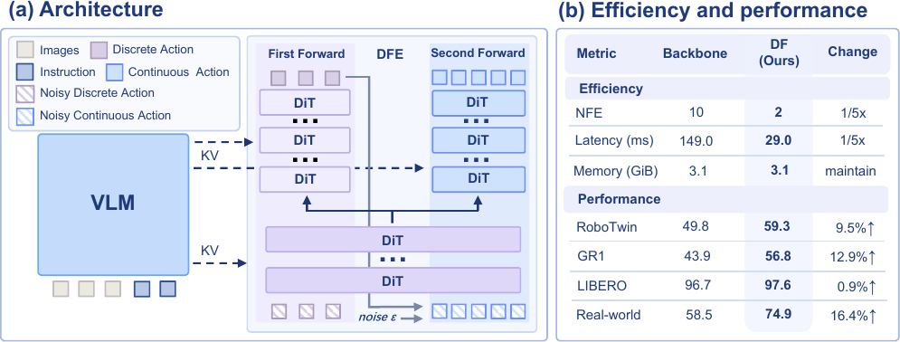
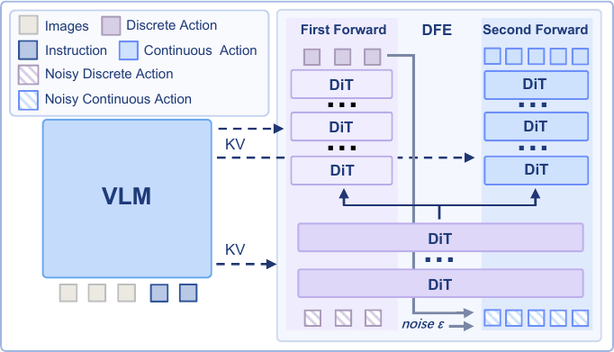
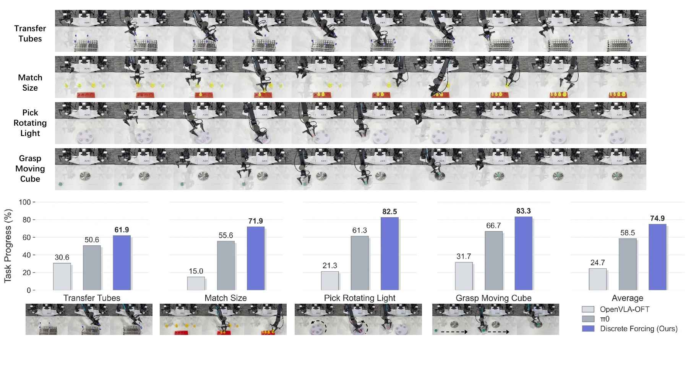

Abstract

Efficient action generation in vision-language-action (VLA) models requires capturing both coarse action structure and fine-grained details. Discrete action tokens provide compact structural representations but sacrifice precision, while continuous action tokens offer high precision but often require multiple denoising steps. We introduce Discrete Forcing, a flow-matching framework that combines these representations through an explicit coarse-to-fine generation process. It first predicts discrete action tokens to establish a coarse action structure, then uses them to guide continuous action refinement. The discrete and continuous components share a common diffusion transformer backbone with specialized branches, maintaining a parameter count comparable to a conventional single-branch model while requiring only one forward pass per branch. Extensive evaluations across multiple benchmarks demonstrate improved performance and faster inference over a parameter-matched continuous action expert, with consistent performance gains as model capacity increases. Real-world experiments further demonstrate improvements on high-precision and dynamic manipulation tasks.
Contributions
Coarse-to-fine generation
Discrete action tokens establish structure before continuous refinement adds precision.
Shared action expert
A common diffusion transformer backbone and specialized branches keep the parameter count comparable to a single-branch model.
Efficient manipulation
Benchmark and real-world evaluations report faster inference and improved performance.
Key Results
Model Architecture

The Discrete Forcing Expert performs discrete action prediction followed by continuous refinement within a partially shared Action DiT conditioned on VLM features. Each branch needs one forward pass.
Experimental Results
| Method | Parameters | NFE ↓ | Spatial | Object | Goal | Long | Avg. |
|---|---|---|---|---|---|---|---|
| Iterative generation (NFE > 2) | |||||||
| DreamVLA | 1.6B | 10 | 97.5 | 94.0 | 89.5 | 89.5 | 92.6 |
| MemoryVLA | 7B | 10 | 98.4 | 98.4 | 96.4 | 93.4 | 96.5 |
| π0.5 | 3B | 10 | 98.8 | 98.2 | 98.0 | 92.4 | 96.9 |
| FlowerVLA | 1B | 8 | 97.5 | 99.1 | 96.1 | 94.9 | 96.9 |
| Fast generation (NFE ≤ 2) | |||||||
| MolmoAct-7B-D | 7B | 1 | 87.0 | 95.4 | 87.6 | 77.2 | 86.6 |
| MIP | 3B | 2 | 97.6 | 95.8 | 95.2 | 82.2 | 92.7 |
| π0.5 | 3B | 2 | 97.2 | 93.6 | 98.0 | 90.4 | 94.8 |
| CF-VLA | 3B | 2 | 98.0 | 99.2 | 96.6 | 92.0 | 96.5 |
| StarVLA | 1.5B | 2 | 96.2 | 98.0 | 95.4 | 90.8 | 95.1 |
| Discrete Forcing (Ours) | 1.5B | 2 | 98.8 | 99.4 | 97.0 | 95.2 | 97.6 |
| Method | Avg. |
|---|---|
| DP | 28.04 |
| DP3 | 55.24 |
| RDT | 34.50 |
| H-RDT | 37.20 |
| TwinVLA | 42.00 |
| π0 | 46.42 |
| UP-VLA | 52.92 |
| StarVLA | 49.80 |
| Discrete Forcing (Ours) | 59.32 |
| Method | Avg. |
|---|---|
| π0.5 | 37.0 |
| GR00T-N1.6 | 47.6 |
| DiT4DiT | 50.8 |
| LangForce | 52.6 |
| FLARE | 55.0 |
| DualCoT-VLA | 55.1 |
| LDA | 55.4 |
| StarVLA | 43.9 |
| Discrete Forcing (Ours) | 56.8 |

BibTeX
@article{wang2026discrete,
title={Discrete Forcing: Infusing Discrete Guidance into Continuous Denoising for Few-Step Action Experts},
author={Wang, Jingbo and Song, Wenxuan and Yu, Wenhao and Zhao, Han and Wang, Xi and Chen, Jiayi and Wang, Donglin and Wang, Yan and Li, Haoang},
journal={arXiv preprint arXiv:2609.39526},
year={2026}
}